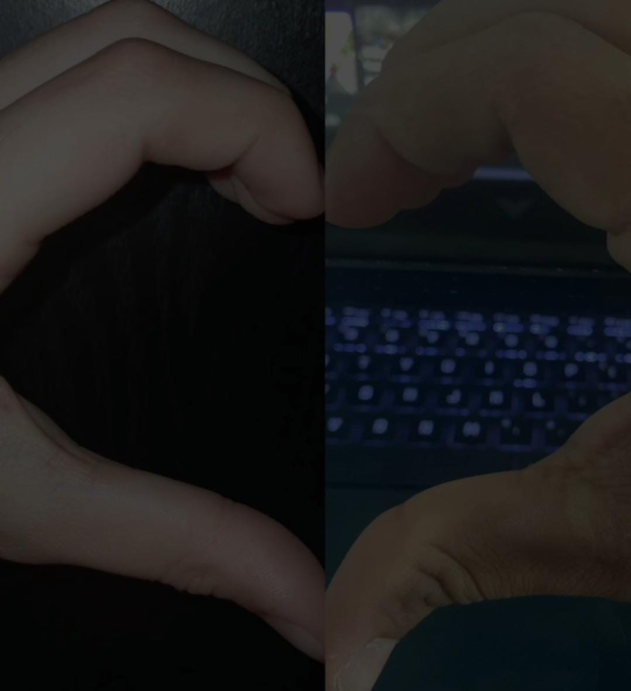

¡Felices 7 Meses Juntos!
💞


7 Razones Por Las Que Te Amo
Mensaje desde el fondo de mi corazon❣️

Those Eyes - New West
Cuando estamos en una multitud riendo fuerte y nadie sabe el por qué - When we're out in a crowd, laughing loud, and nobody knows why
Cuando estamos perdidos en un club emborrachándonos y me sonríes de esa forma - When we're lost at a club, getting drunk, and you give me that smile
Yendo a casa en la parte trasera de un coche y tu mano toca la mía - Going home in the back of a car and your hand touches mine
Cuando terminemos de hacer el amor y tú miras hacia arriba y me echas aquella mirada - When we're done making love and you look up and give me those eyes
Porque todas las pequeñas cosas que haces - 'Cause all of the small things that you do
Me recuerdan porque me enamoré de ti - Are what remind me why I fell for you
Y cuando estamos separados y te estoy extrañando - And when we're apart and I'm missing you
Cierro los ojos y todo lo que veo es a ti - I close my eyes and all I see is you
Y las pequeñas cosas que haces - And the small things you do
Cuando me llamas por la noche mientras te estás drogando con tus amigos - When you call me at night while you're out getting high with your friends
Cada hola, cada adiós, cada te amo que has dicho alguna vez - Every hi, every bye, every I love you you've ever said
Porque todas las pequeñas cosas que haces - 'Cause all of the small things that you do
Me recuerdan por qué me enamoré de ti - Are what remind me why I fell for you
Y cuando estamos separados y te estoy extrañando - And when we're apart and I'm missing you
Cierro los ojos y todo lo que veo es a ti - I close my eyes and all I see is you
Y las pequeñas cosas que haces - And the small things you do
Cuando terminemos de hacer el amor y tú miras hacia arriba y me echas aquella mirada - When we're done making love and you look up and give me those eyes
Porque todas las pequeñas cosas que haces - 'Cause all of the small things that you do
Me recuerdan por qué me enamoré de ti - Are what remind me why I fell for you
Y cuando estamos separados y te estoy extrañando - And when we're apart and I'm missing you
Cierro los ojos y todo lo que veo es a ti - I close my eyes and all I see is you
Y las pequeñas cosas que haces - And the small things you do
Todas las pequeñas cosas que haces - All the small things you do